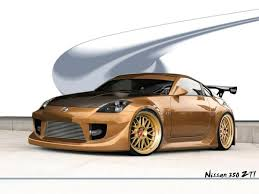
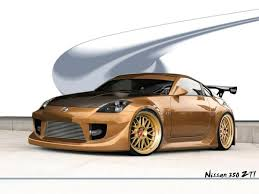

Categories
- Sportives
- 
Une voiture de sport est un véhicule automobile généralement doté d'une motorisation puissante, d'un châssis et d'un système de freinage performants. La majorité de ces véhicules sont des deux-places. La performance est privilégiée, parfois au détriment du confort.
- 
- Citadines

En Europe, leur longueur varie en moyenne de 3,4 à 3,70 m. Elles ont entre 2 à 4 places. Les modèles 4 places sont majoritaires. Traditionnellement elles sont destinées à un public urbain jeune ou servent de voiture secondaire, mais depuis quelques années des modèles plus coûteux et dotés d'un équipement luxueux font leur apparition dans ce segment. Les termes Mini citadine ou Petite citadine sont utilisés en Europe.
- Muscle cars

Muscle car (littéralement « voiture musclée ») est un terme anglais servant à désigner les automobiles américaines (ou australiennes avec la marque Holden) propulsées par un moteur surdimensionné, le plus souvent un V8. Si les premières automobiles de grande puissance sont nées dans les années 1950, l'histoire officielle désigne généralement sous l'appellation de « Muscle car » des modèles datant pour la plupart de la décennie suivante1.